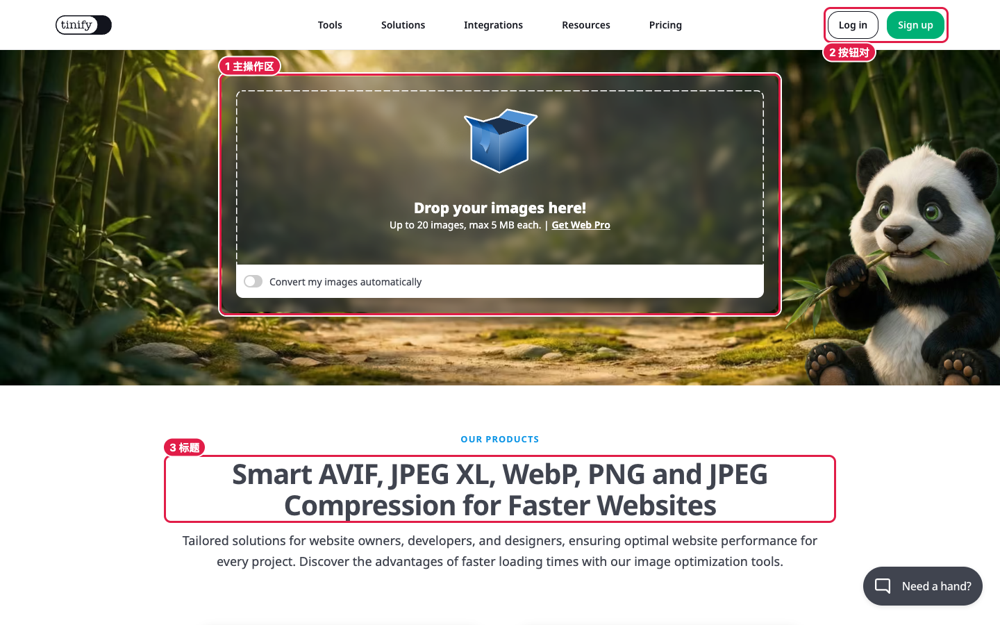
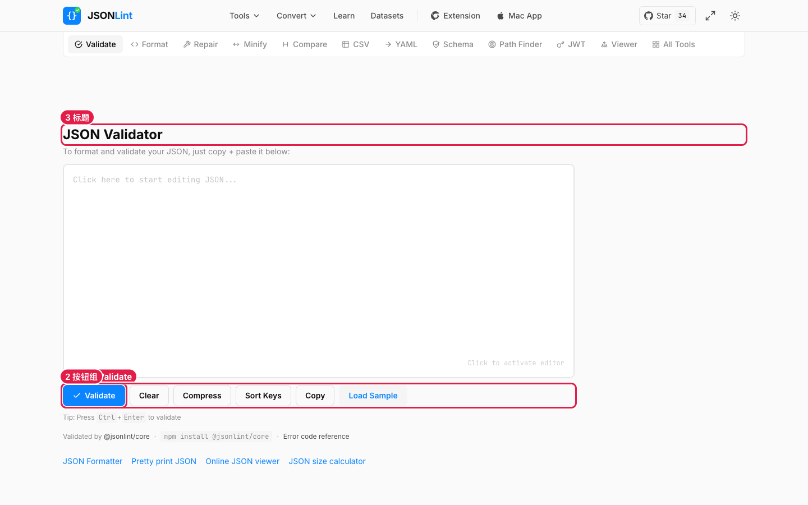
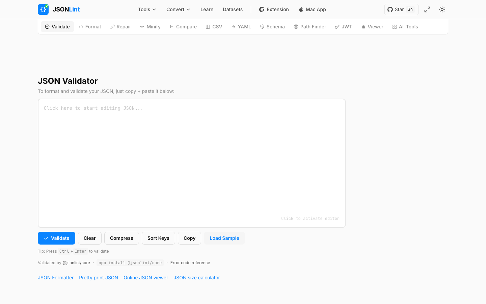
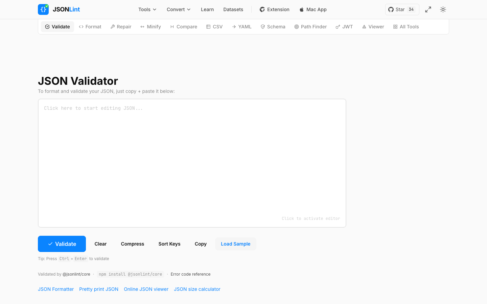

jsonlint.com 首页 · 参考 TinyPNG(Tinify) 的改版指令卡
页面目标：访客粘贴 JSON 后，一眼找到 Validate；页面保持安静，不让 6 个按钮同时抢眼。


一、想借鉴的 → 对应我页面的哪里
| 编号 | 类型 | 参考图里的位置 | 好在哪 | 对应我页面的区域 |
|---|---|---|---|---|
| B1 | 按钮样式 | 导航右上 Sign up（绿色实心）+ Log in（描边），一实一空；页面里的主动作 Analyze now 高 49px | 只有一个“最重”的按钮，其余退后，用户不用想点哪个 | 编辑框下的按钮组：Validate 实心蓝（38px 高、14px 字），旁边 Clear / Compress / Sort Keys / Copy 四个同尺寸描边按钮 + 一个 Load Sample，共 6 个，视觉重量几乎一样button.btn.btn-primary ； button.btn.btn-secondary |
| B2 | 标题层级 | 页面大标题 40px、字重 700，是正文 15px 的 2.67 倍 | 进页面先看到“这是什么” | “JSON Validator” 24px、字重 600，只有正文 16px 的 1.5 倍，与下面的说明、按钮拉不开差距h1 |
| B3 | 留白 | 主操作区（上传框）四周留白大，块与块之间 48px（中位数） | 主操作区像被放在舞台中央，不被别的元素挤着 | 编辑框与下面按钮组的间距只有 12px，首屏块间距中位数 18pxdiv.space-y-3 > div.flex.flex-wrap |
二、这些地方不动
- 912px 宽的 JSON 编辑框（左侧）：这是工具本体：粘贴长 JSON 需要宽度；TinyPNG 的 760px 居中框是为拖图设计的，不借鉴
- 顶部 11 个工具标签（Validate / Format / Repair …）：用户靠它在工具之间切换，是这类站点的核心导航，不动
- Validate 的蓝色 #0a84ff：品牌色与参考页不同，保持，只借“一实多虚”的关系
- 编辑框下方的 Tip 和 JSON Formatter 等链接：SEO 内链，不动
- TinyPNG 的熊猫大图背景：与 JSON 工具的气质不符，且会拖慢加载
- 参考页首屏的聊天悬浮按钮（Need a hand?）：这是客服插件，不是设计
三、改版清单（按优先级）
P0P0-1 Validate 放大，成为按钮组里最大的一个✅ 实测已达标
- 改哪里
- button.btn.btn-primary（Validate）
- 怎么改
- 高度 38 → 48px，左右内边距 28px，字号 14 → 16px，字重 600。其余按钮保持原大小。
button.btn.btn-primary { height:48px; padding:0 28px; font-size:16px; font-weight:600; } - 怎么看改对了
- 一眼最大最亮的是 Validate；量：高 ≥ 46px、字号 ≥ 16px
- 借鉴点
- B1
P0P0-2 其余按钮去掉描边，变成文字按钮✅ 实测已达标
- 改哪里
- button.btn.btn-secondary（Clear / Compress / Sort Keys / Copy）
- 怎么改
- 边框透明、背景透明，文字和悬停效果保留。保证它们仍可点（尺寸不变），只是不再画框。
button.btn.btn-secondary { border-color:transparent; background:transparent; } - 怎么看改对了
- 按钮组里只有 Validate 是有框有底色的；量：次要按钮背景和边框都是透明
- 借鉴点
- B1
P1P1-1 页面标题放大加重✅ 实测已达标
- 改哪里
- h1（JSON Validator）
- 怎么改
- 24px/600 → 32px/700（与正文比从 1.5 倍到 2 倍；TinyPNG 是 2.67 倍，工具站不需要那么大，取中间值）。 注意：站点用工具类（如 text-2xl）设字号，只写 h1 { … } 压不过，要写 h1[class] { … } 抬高优先级。
h1[class] { font-size:32px; font-weight:700; } - 怎么看改对了
- 标题明显比下面那行说明大一档；量：字号 ≥ 32px，字重 ≥ 700
- 借鉴点
- B2
P1P1-2 编辑框和按钮组之间拉开✅ 实测已达标
- 改哪里
- div.space-y-3 > div.flex.flex-wrap（按钮组容器）
- 怎么改
- 上外边距 12px → 24px，按钮之间 8px，垂直居中对齐（Validate 变高后其他按钮不再顶着上沿）。
.space-y-3 > .flex.flex-wrap { margin-top:24px; gap:8px; align-items:center; } - 怎么看改对了
- 编辑框底边与按钮组之间有明显空隙；量：按钮组上外边距 ≥ 24px
- 借鉴点
- B3
四、套上改动后的样子（浏览器临时预览）

